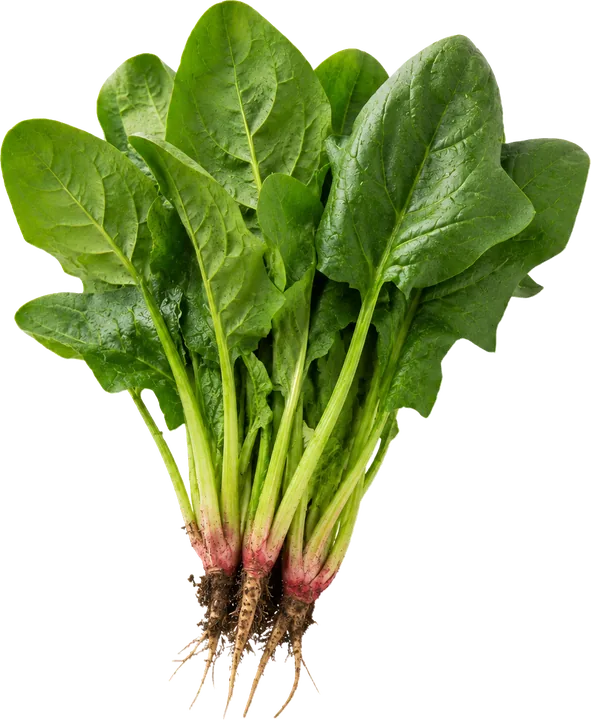
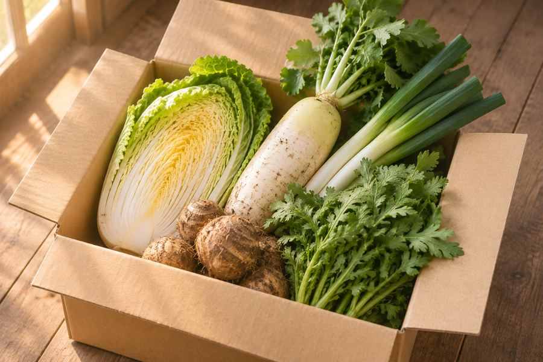
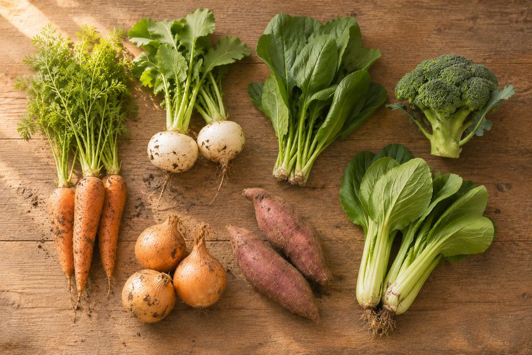
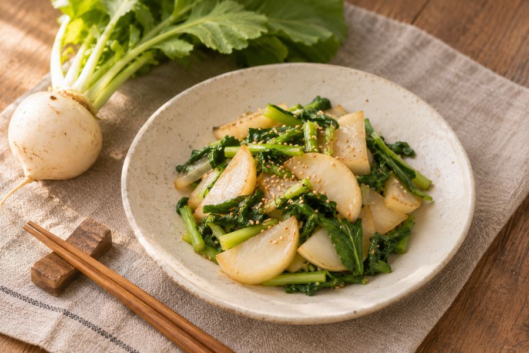
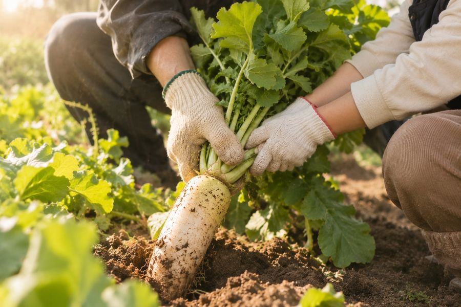
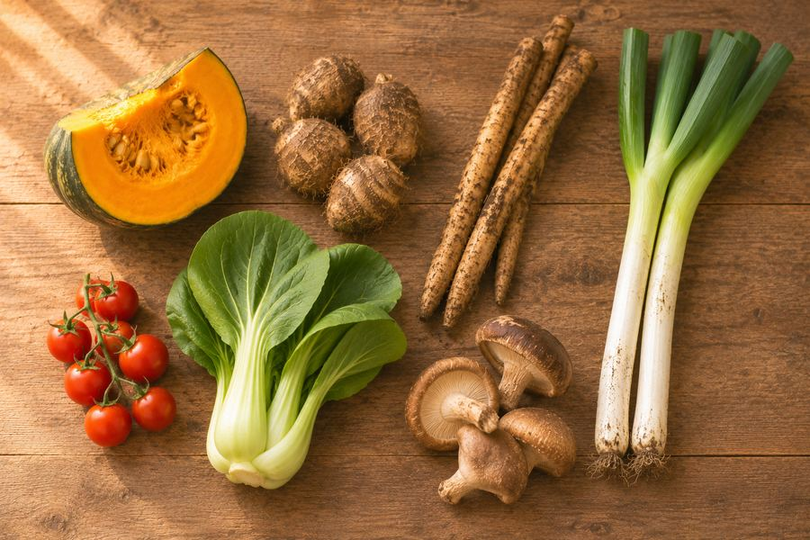
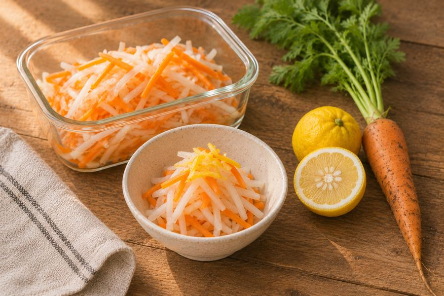
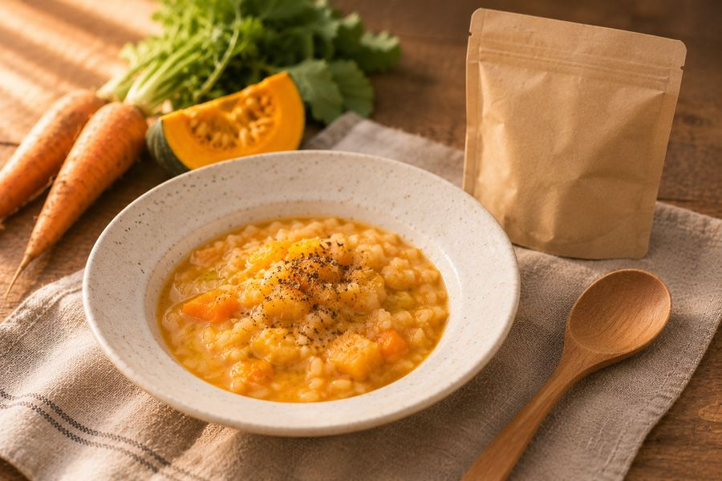
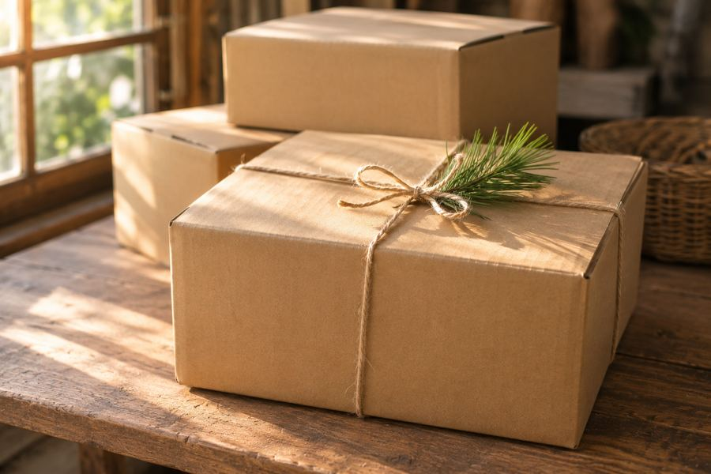
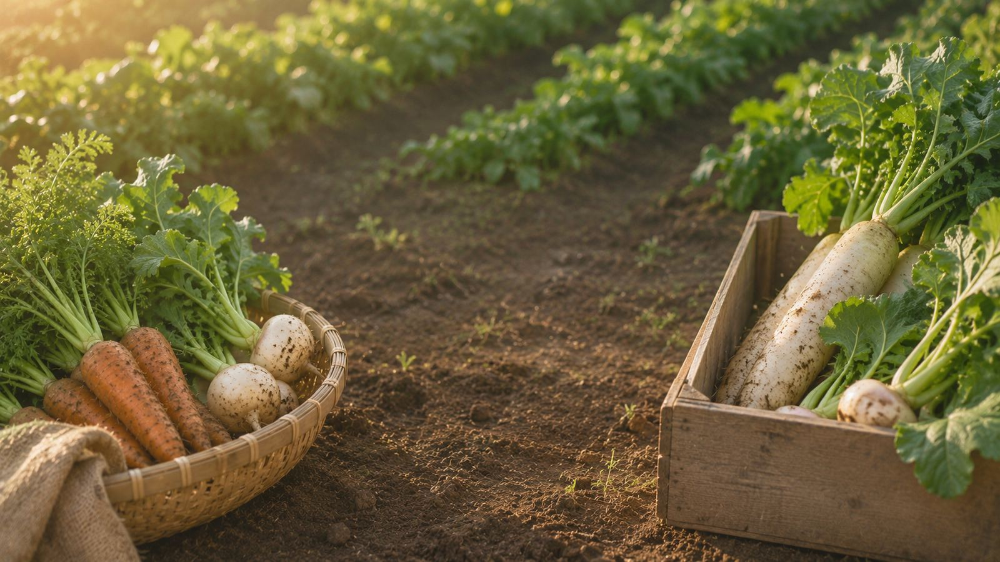

News & Recipe
お知らせ・レシピ
今週の野菜、届いた野菜で作れるレシピ、畑からのお知らせをお届けします。

-

記事の写真お知らせ冬の野菜セットの受付を始めました
白菜、大根、ねぎ、春菊、里芋。
鍋や煮ものに使いやすい冬野菜をまとめたセットです。 -

記事の写真今週の野菜今週のMセットの中身（11月第1週）
葉つき人参、かぶ、ほうれん草、ブロッコリーなど7品目。
さつまいもが入りはじめました。 -

記事の写真レシピかぶの葉まで使いきる、かぶの炒めもの
かぶは焼き目をつけて甘く、葉はさっと炒めて歯ごたえを残します。
10分でできる一品です。 -

記事の写真お知らせ11月15日（日）、豊田市の自社農園で収穫体験を開きます
大根やかぶを、畑で一緒に収穫しませんか。
定期便をご利用中の方は参加無料です。 -

記事の写真今週の野菜今週のMセットの中身（10月第4週）
かぼちゃ、里芋、ごぼう、長ねぎなど7品目。
煮ものや汁ものに使いやすい週です。 -

記事の写真レシピ大根と人参の常備菜、柚子なます
細切りにして塩でもみ、甘酢であえるだけ。
冷蔵庫で5日ほど日持ちします。 -

記事の写真レシピふぞろい野菜のスープで作る、かぼちゃのリゾット
スープ1袋とごはんで作る、15分のリゾット。
かぼちゃを足すと食べごたえが出ます。 -

記事の写真お知らせ年末年始の配送について
12月29日〜1月4日は発送をお休みします。
年内最後のお届けは12月26日（土）です。

まずは一度、
味わってみてください。
収穫したその日に発送した野菜を、生産者の手書きメッセージとレシピカードと一緒にお届けします。
お試しセットを申し込む（送料無料）お試しセットは初回限定・送料無料です。